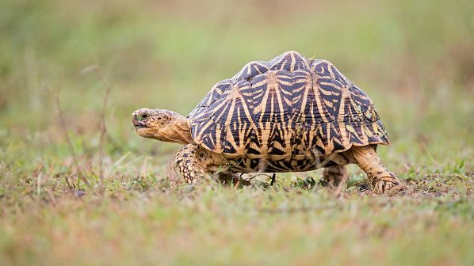

想探索你從未接觸的陸龜嗎 ?
點我探索奇妙的陸龜世界還是公寓住宅最適合養的寵物 ?
點我查看不吵不鬧的萌寵幫您蒐集最完善的飼養攻略 !
點我查看飼養懶人包您的愛龜出現問題，卻不知道怎麼解決
點我查看詳細 Q&A


常見問答
-

Q : 請問目前最是新手養的水龜有那些呢 ?
A : 斑龜，巴西龜，紅肚甜甜圈以及屋頂龜都很適合新手養喔 ! 但是既然飼養了就不要輕易拋棄他們喔。 -

Q : 請問飼養陸龜需要有證書嗎 ?
A : 目前台灣大部分陸龜都屬於二級保育的範圍，因此購買陸龜前必須先確認賣家會提供證書，再去購買才不會觸法被罰款喔。 -

Q : 請問我的愛龜的殼有翹甲的情形怎麼辦呢 ?
A : 一般水龜有翹甲的情形，不外乎就是缺少鈣、缺少日照或是空間太狹小所導致的，龜殼若開始發生翹甲的行為，建議可以在飲食中多補充蝦殼或是含有鈣的營養食品，並且每天曬太陽吸收UVB，以讓龜殼翹甲的情形緩頰。